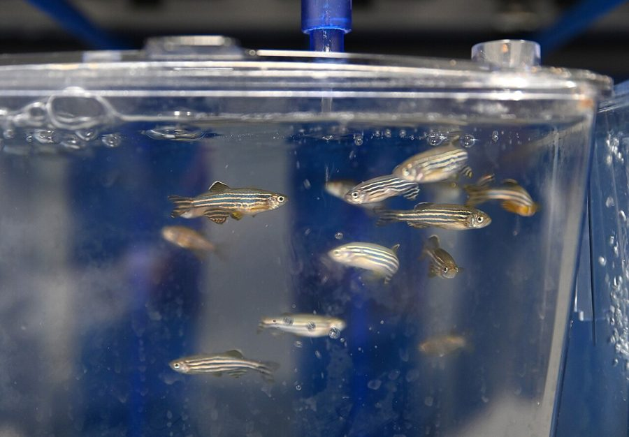

ज़ेबरा मछलीZebrafish
Danio rerio · Cyprinidae · FSH-0019

- Scientific nameवैज्ञानिक नाम
- Danio rerio (Hamilton, 1822)
- Familyकुल
- Cyprinidae
- Hindiहिंदी
- ज़ेबरा मछली
- Local namesस्थानीय नाम
- zebra machhli, zebra fish, zebra danio, dhariwali machhli
- Status hereयहाँ की स्थिति
- native
- Movementआवागमन
- Resident, here all year
- IUCNIUCN
- LC
- Reviewसमीक्षा
- audited and independently read
When to look कब देखें
Present all year.साल भर मौजूद।
Uses and possibilities उपयोग और संभावनाएँ
Drawn from the documented uses in the profile below, where each is labelled traditional, current or a research lead. All uses →
Tell it apart from इनसे अलग पहचानें
ज़ेबरा मछली / Zebrafish
Danio rerio (Hamilton, 1822) — Cyprinidae
ज़ेबरा मछली — गंगा के मैदान की अपनी देसी मछली है जो छोटी, तेज़ गति वाली और चाँदी-सफ़ेद धारियों वाली। यही मछली दुनिया की प्रयोगशालाओं में विकास-जीव विज्ञान की सबसे प्रसिद्ध मछली बन गई, क्योंकि इसके अंडे पारदर्शी होते हैं और इसका विकास मानव विकास जैसा होता है। इसके बारे में ज़्यादा कुछ नहीं पता कि यह यहाँ जंगल में अब कैसे रहती है, पर गाँव के नाले और बाढ़ के पानी में सदा मिलती है।
Quick Identification त्वरित पहचान
| Feature | Description |
|---|---|
| Size | 2.5–4 cm, occasionally 5 cm |
| Shape | Streamlined, cylindrical, with a flattened head and terminal mouth |
| Colour | Silver-white body with 7–8 dark vertical stripes from head to tail; stripes extend to the fins |
| Fins | Small dorsal and anal fins; rounded tail fin; pectoral fins clear |
| Eyes | Large, positioned laterally |
| Behaviour | Rapid, darting movements; schooling in groups; gulps at the surface |
Field tip: A tiny striped fish darting in schools through a seasonal nullah or a monsoon-flooded paddy field, with dark vertical bars from head to tail and a silver body. The stripes distinguish it from the tiny cyprinids; the schooling behaviour and speed from the solitary bottom fish. The transparency of the whole head is distinctive.
हिंदी — कैसे पहचानें: नाले के साफ़, तेज़ पानी में छोटी, चाँदी, ऊपर से सिर तक पेट तक काली ऊर्ध्वाधर धारियों वाली, झुंड में दौड़ती मछली। धारियाँ इसे बाकी छोटी मछलियों से अलग करती हैं; सिर पारदर्शी।
Morphology आकारिकी
Biometrics (wild populations, Indo-Gangetic plain):
| Measurement | Range |
|---|---|
| Standard length | 25–40 mm |
| Weight | 0.2–0.5 g |
| Vertical stripes | 7–8 |
| Dorsal fin | 10–12 soft rays |
| Anal fin | 9–11 soft rays |
| Caudal vertebrae | 19 |
Head and jaws: The head is transparent from above, with large lateral eyes. The mouth is terminal and small, adapted for taking small invertebrates from the surface and water column. Teeth are present in the pharynx.
Fins: The dorsal fin is short and positioned over the pelvic fins; the anal fin is similar; both are partly transparent. The tail fin is homocercal and fan-shaped. Pectoral fins are small and clear.
Stripe pattern: The body bears a consistent pattern of dark vertical stripes, beginning behind the gill cover and extending to the tail base. The stripes are most prominent in adults and breeding fish; juvenile colouration is more variable.
हिंदी: सिर पारदर्शी, बड़ी किनारे की आँखें। मुँह छोटा, सतह के कीड़े लेने के लिए। 7 से 8 काली ऊर्ध्वाधर धारियाँ, गिल से पूँछ तक। पंख छोटे और पारदर्शी। पूँछ पंखा जैसी।
Behaviour & Ecology व्यवहार और पारिस्थितिकी
The fish of flowing water and open spaces. It lives in schools of dozens to hundreds, constantly on the move, sensitive to light and shadows, and responsive to changes in current and depth. Adults eat the fry and eggs of other fish and small aquatic invertebrates—insects, copepods, tiny worms—and plant detritus. Young fish grow fast in warm water and reach breeding size in the monsoon. In the wild, natural breeding is poorly documented in the region, but the presence of eggs and fry in monsoon surveys and the seasonal abundance of juveniles indicate breeding occurs with the first rains.
Predators are larger fish, herons, kingfishers and fish eagles. The species tolerates moderate pollution and temporary water loss, and its presence in seasonal nullahs and ditches indicates a reasonable aquatic habitat. It is absent from heavily silted and anoxic water.
हिंदी: बहते पानी की झुंड वाली मछली। दर्जनों में एक साथ, लगातार हिलती हुई, रोशनी और छाया के प्रति संवेदनशील। बड़ी मछलियों के अंडे-बच्चे और छोटे कीड़े खाती है। बरसात में बड़ी होकर प्रजनन करती है। बगुले, किंगफ़िशर और बाज इसे खाते हैं।
Life Cycle / Phenology जीवन चक्र
| Stage / season | Event |
|---|---|
| June–August | Monsoon flooding; breeding in shallow, vegetated water |
| Eggs, <1 day | Scattered on plants and detritus; hatching within 24 hours at 25–28 °C |
| Larvae, 2–3 days | Yolk sac absorption; free-swimming larvae begin feeding on nauplii and algae |
| Juveniles, 4–6 weeks | Rapid growth; schooling behaviour develops |
| 10–12 weeks | Sexual maturity; size >2.5 cm |
| September–October | Peak abundance of young fish in shallow water |
| November–May | Slower growth in cool, low-water season; adults persist in deeper pools |
हिंदी: बरसात में प्रजनन; अंडे एक दिन में निकलते हैं; लार्वा तीन दिन में खाना शुरू; दस-बारह हफ़्ते में बालिग़; सितंबर में युवा मछलियों की भीड़; ठंड और सूखे में धीमा विकास।
Host Plants or Prey आहार
- Small aquatic insect larvae: midge larvae (Chironomidae), small mayfly nymphs, mosquito larvae.
- Crustaceans: small Water Flea and other copepods.
- Plant material: algal filaments, Water Silk, and detritus.
- Eggs and fry of other pond fish when available.
Predators / Natural Enemies शत्रु
- Fish: Great Snakehead, Stinging Catfish, Climbing Perch, older zebrafish.
- Birds: Little Cormorant, Indian Pond Heron, White-throated Kingfisher, Pied Kingfisher, fish eagle.
- Others: aquatic insects, dragonfly nymphs, giant water bugs on small fish and fry.
Agricultural / Human Relevance कृषि प्रासंगिकता
Research. The zebrafish is the world's leading developmental model organism, used in tens of thousands of papers to study gene function, birth defects, drug toxicity and disease. Its transparent embryo, rapid development, large brood size, and genetic similarity to vertebrates including humans make it unmatched for cell-level research. The International Zebrafish Initiative and zebrafish stock centers in multiple countries maintain stocks derived from wild SE Asian populations.
In the wild. Nothing is known about wild zebrafish in Basti and Ayodhya; no studies exist and no traditional use is recorded. Whether the species has declined, remained stable or increased in the region is undocumented. Habitat loss—the conversion of seasonal streams to irrigation channels and the filling of monsoon wetlands—is a known threat to shallow-water fish in northern India.
Traditional and Ethnobotanical Use: none recorded for the region.
Today. Aquarium trade; occasional capture for local food if abundant in monsoon.
Research direction (a lead, not a result). A baseline survey of zebrafish in seasonal water bodies in Basti and Ayodhya, before further landscape change, would answer whether the species remains common. A record of breeding times, habitat type, water chemistry and co-occurring species would establish the natural history of the wild population that gave rise to the laboratory strain.
हिंदी: दुनिया की प्रयोगशालाओं में जीन, विकास, बीमारी का अध्ययन सबसे ज़्यादा इसी से होता है। पारदर्शी अंडे, तेज़ विकास, बड़ी संख्या में बच्चे। लेकिन यहाँ जंगल में इसके बारे में कुछ नहीं पता। मौसमी नाले और तालाब कम हो रहे हैं — खतरा यही है।
Expected Locally स्थानीय रूप से अपेक्षित
Not a field record. Written from published accounts for eastern Uttar Pradesh. No confirmed local sighting yet — if you have seen it, that is what the atlas needs.
अभी तक स्थानीय पुष्टि नहीं। यह विवरण प्रकाशित स्रोतों से है, किसी अवलोकन से नहीं।
To be expected in seasonal nullahs, monsoon-flooded paddy fields and shallow pools through the monsoon months June to September, in the millet zone and paddy areas. Schools of small striped fish visible in clear water are likely this species. A photograph or a net catch during monsoon flooding is a confirmed record.
Distribution वितरण
Global range: Native to the Indo-Gangetic plain from northern Pakistan through the Brahmaputra system to Myanmar; the laboratory strain derives from SE Asian populations.
In India: Widespread in river systems from the Indus to the Brahmaputra; recorded from the Ganga, Yamuna and their tributaries, and throughout the flood plains of the Indo-Gangetic system.
In Uttar Pradesh: Throughout the northern and eastern plains, particularly in the Ganga system and seasonal tributaries.
In Basti district / eastern UP: Expected in seasonal streams, monsoon-flooded paddy fields and temporary pools; likely abundant in monsoon.
Research Questions शोध प्रश्न
Anyone can investigate these | कोई भी इन प्रश्नों की जाँच कर सकता है
- Is the zebrafish still present in seasonal nullahs of your block, and in which months? / क्या आपके ब्लॉक की मौसमी नालियों में ज़ेबरा मछली अब भी है, किन महीनों में? — Walk monsoon drains with a net in July and August.
- How many schools are in a given nullah in monsoon, and what is the typical school size? — Count and measure one haul.
- What do the eggs look like under water, and on what plants are they laid? — Search monsoon pools with vegetation.
- Are juveniles more abundant than adults in September and October? — Compare net hauls.
- What is the smallest breeding female, by length? — Examine fish during monsoon breeding season.
Similar Species मिलती-जुलती प्रजातियाँ
| Species | How to tell apart | हिंदी |
|---|---|---|
| giant danio (Devario aequipinnatus) | Much larger (4–8 cm), fewer stripes (2–3 horizontal), deeper body | बड़ी, कम धारियाँ |
| rosy barb (Pethia conchonius) | Red or pink body; no vertical stripes; deeper body shape | गुलाबी रंग, धारियाँ नहीं |
| Spotted danio (Danio dangila) | Stripes and spots combined; larger; northern distribution only | धब्बे भी हैं |
Field rule: A small silvery fish with 7–8 sharp dark vertical stripes from head to tail, in rapid schools in monsoon water, is the zebrafish; the stripes are its most certain mark.
Taxonomy & Classification वर्गीकरण
Original description. Described by Francis Hamilton in 1822 as Cyprinus rerio in An Account of the Fishes Found in the River Ganges and Its Branches, page 342, from the Ganga and other Bengali rivers. The specific epithet rerio is a variant of rio, Bangla for "striped". Later placed in Danio by Heckel and Kner when the genus was separated for small cyprinids with stripes and barbels.
Subspecies. The wild species is geographically variable; the laboratory strain, Danio rerio, is assumed monotypic, though the term does not apply to a population. Natural hybridisation with D. nigrofasciatus occurs in sympatry.
Family and order placement. Cyprinidae, the carp family; order Cypriniformes. Danio is a genus of some 50 small striped cyprinids of South and Southeast Asia, of which only D. rerio is extensively studied in the laboratory.
Phylogenetic notes. Molecular phylogenies place Danio among the basal cyprinids; D. rerio is sister to D. nigrofasciatus. The laboratory strain has been extensively sequenced and genetically mapped.
IUCN status rationale. Least Concern. Widespread and abundant in suitable habitats; no range contraction documented, though local habitat loss in some areas is certain.
Photo Gallery फोटो गैलरी
Photos needed आवश्यक फोटो
- [ ] School in monsoon nullah (मौसमी नाली में झुंड)
- [ ] Close-up showing stripes and transparency (धारियाँ और पारदर्शकता)
- [ ] Breeding pair or gravid female (प्रजनन जोड़ी)
References संदर्भ
- Hamilton, F. (1822). An Account of the Fishes Found in the River Ganges and Its Branches, p. 342. Edinburgh University Press. [original description, as Cyprinus rerio]
- Day, F. (1878). The Fishes of India, vol. 1. Williams and Norgate, London. (Danio)
- Hisaoka, K.K. & Battle, H.I. (1958). The normal developmental stages of the zebra fish, Brachydanio rerio (Hamilton-Buchanan). Journal of Morphology 102: 311–328.
- Detrich, H.W., Zon, L.I. & Nusslein-Volhard, C. (eds.) (2004). The Zebrafish: Genetics and Genomics. Academic Press. [comprehensive laboratory handbook]
- Spence, R., Gerlach, G., Lawrence, C. & Smith, C. (2008). The behaviour and ecology of the zebrafish, Danio rerio. Biological Reviews 83(1): 13–34.
- GBIF Occurrence Data — Danio rerio, India (2026).
Source file: species/fauna/fish/zebrafish.md